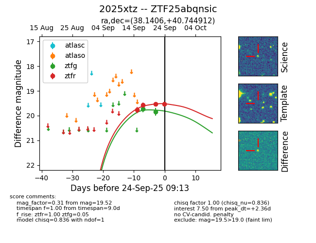
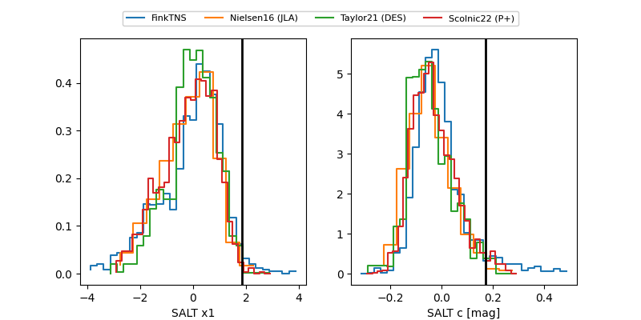

FINK: ZTF25abqnsic
Lasair: ZTF25abqnsic
ALeRCE: ZTF25abqnsic
TNS: 2025xtz
YSE: 2025xtz
ZTF25abqnsic (ztf,fink)
2025xtz (tns,yse)
equatorial (ra, dec) = (38.1406,+40.74491)
galactic (l, b) = (142.8428,-18.18454)


last ztfg=19.84, ztfr=19.52
2 ztfg, 4 ztfr detections